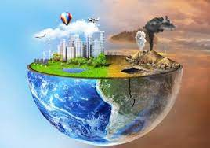

CONSECUENCIAS DE LA CONTAMINACION
-Daños a la salud de los seres humanos
a todos los posibles cambios en el estado de salud que son consecuencia de la exposición a factores de riesgo o de la manera en que es abordado un problema de salud. (los más estudiados son la enfermedad y muerte). Condición física o mental identificable y adversa que surge y/o empeora por la actividad laboral y/o por situaciones relacionadas con el trabajo. Peligro: Fuente, situación o acto con potencial para causar daño en términos de daño humano o deterioro de la salud, o una combinación de éstos.
- Aumento del calentamiento global
es el mayor desafío medioambiental al que se enfrenta la Tierra en la actualidad. Tanto es así, que de no tomar medidas preventivas para frenar sus efectos negativos, a largo plazo estaría en peligro la supervivencia de las especies animales que la habitan, entre ellas, el género humano.ya es una realidad. Basta con echar un vistazo a algunos puntos del planeta como por ejemplo los polos, las zonas desérticas, el nivel de ríos y océanos o los bosques, entre otros para confirmar que de alguna u otra forma ya convivimos con sus efectos más devastadores.
- perdida o disminucion de recursos naturales
es el agotamiento de los recursos naturales se produce cuando estos son consumidos de una forma tan rápida que la naturaleza no tiene la capacidad ni el tiempo para asegurar su regeneración. La minería a gran escala. La tala indiscriminada de árboles que produce la deforestación. La sobrepesca o pesca excesiva que arrasa con el fondo marino y destruye hábitats y especies. La extracción de cantidades inmensas de combustibles fósiles como petróleo, gas natural y carbón.
a desertificación es consecuencia del cambio climático y ambas amenazas se retroalimentan, rompiendo el equilibrio entre los recursos naturales y el sistema de producción socioeconómico.El agua, en todos sus estados, es vital. Dependemos de ella tanto para beber como para alimentarnos y numerosas especies necesitan los ecosistemas acuáticos para vivir y, además, estos contribuyen a mantener las temperaturas globales y los niveles de CO2.
- erosion del suelo
es el desplazamiento de la capa superior de este, una forma de degracion del suelo. Un bajo nivel de erosión del suelo es un proceso natural en toda la tierra, pero las prácticas agrícolas pueden intensificar el proceso de erosión.
Los principales agentes de la erosión del suelo son el agua y el viento. Combinados, la erosion hidrica y eolica son responsables de aproximadamente el 84% de la extensión global de tierras degradada, lo que hace que la erosión excesiva sea uno de los problemas ambientales más importantes en todo el mundo. es un proceso en que se va perdiendo la capa superficial del suelo, que proporciona a las plantas la mayoría de los nutrientes y el agua que necesitan. Cuando esta capa fértil se desplaza, la productividad de la tierra disminuye y los agricultores pierden un recurso vital para el cultivo de alimentos.
- degradacion de los paisajes naturales
es el deterioro del medio ambiente reflejado por el agotamiento de recursos naturales como el aire, el agua, el suelo y la cubierta del suelo, el cual conlleva a la destrucción de ecosistemas y la extinción de la vida silvestre, la cual es la base de toda la vida en la Tierra. Es menos capaz de proporcionar servicios ecosistémicos como el agua, la sombra, la prevención de la erosión del suelo y la retención de humedad.
e refiere a quitar a una persona sus títulos, distinciones y prerrogativas, o a minimizar las facultades o propiedades de un sujeto o de algo.
